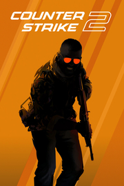

|  | |
| Tiempo de juego | No Jugado |
| Última actividad | Nunca |
| Añadido | 1/29/2025 14:44:06 |
| Modificado | 1/29/2025 14:47:36 |
| Estado de finalización | No Jugado |
| Librería | Playnite |
| Fuente | FREE TO PLAY |
| Plataforma | PC (Windows) |
| Fecha de lanzamiento | |
| Puntuación de la Comunidad | 87 |
| Puntuación de la Crítica | |
| Puntuación de usuario | |
| Género | Acción Free to Play |
| Desarrollador | Valve |
| Editor | Valve |
| Característica | Compras Dentro De La Aplicación Con Sist. Antitrampas De Valve Cromos De Estadísticas Multijugador Multijugador Multiplataforma Remote Play En Móvil Remote Play En Tableta Remote Play En TV Timeline Workshop |
| Enlaces | Punto de encuentro Discusiones Guías Noticias Página de la tienda PCGamingWiki Workshop |
| Tag | Acción Basados en equipos Bélicos Comercio Competitivos Cooperativos Cooperativos en línea De ritmo rápido Difíciles Disparos e-sports Estrategia FPS JcJ Militares Modificables Multijugador Primera persona Realistas Tácticos |